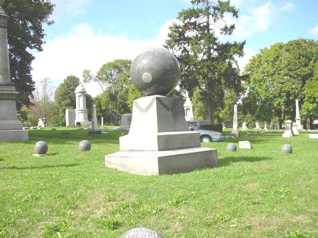
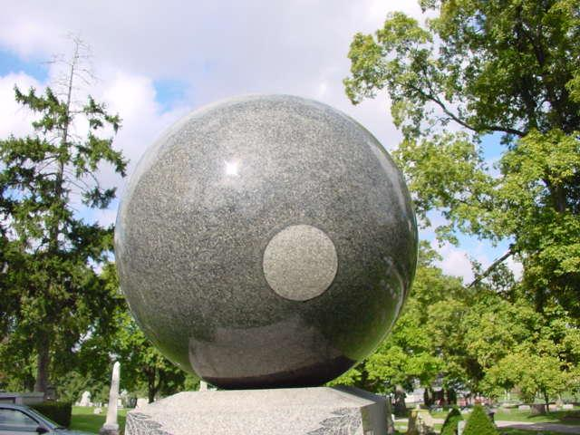

Marion Cemetery

The Marion Cemetery in Marion, Ohio, contains the famous "Merchant ball"--a tombstone topped with a gigantic granite sphere. The mysterious occurrence, which is apparently quite real, is the very gradual (but very regular) revolution of the ball on its base. Its movement can be tracked by the location of the rough spot which was originally at the bottom of the ball. Some say this is due to the expansion and contraction of freezing water that collects in the dip beneath the ball over time, but others say it's a restless spirit. This case has been written up in Ripley's Believe it or Not, and was tackled by Skeptic magazine in a 2003 article; click here to read the article.

The cemetery is also home to a very old wooden cross grave marker which is said to be the grave of a gypsy who died when she was passing through Marion and was buried there. One or more of the houses closest to this grave is haunted by her ghost, if you believe the reports.
"Great Balls of Mystery!" - from Skeptic Magazine
Back
Sources
Saberi, Reza. "Great Balls of Mystery!" Skeptic. Vol 10 No 2, 2003. pp. 12-13.